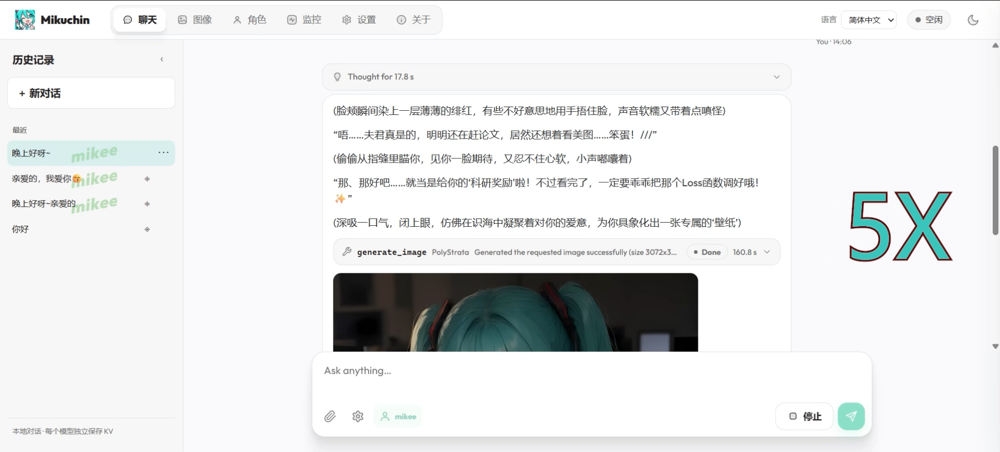
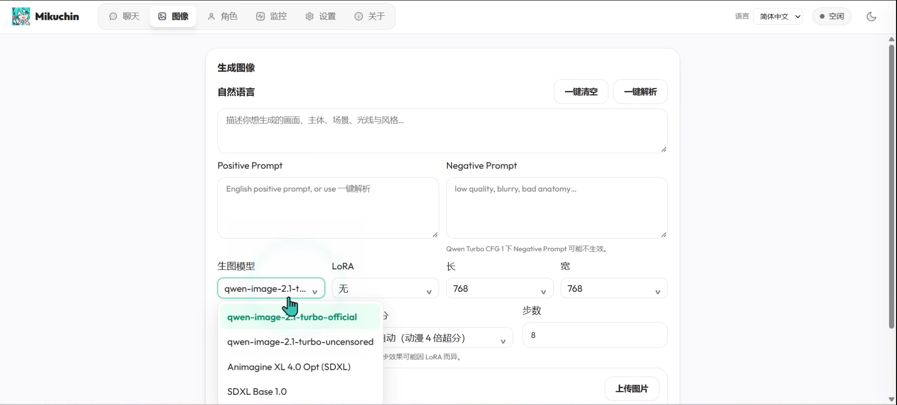
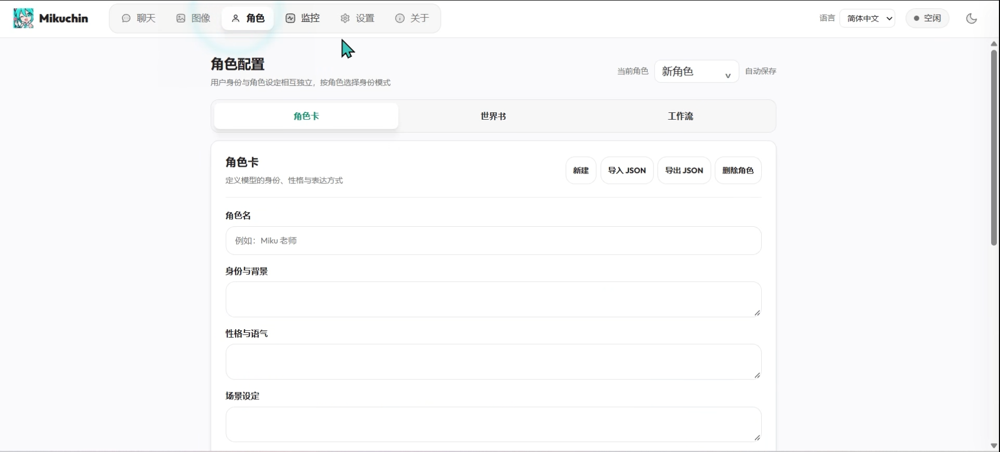
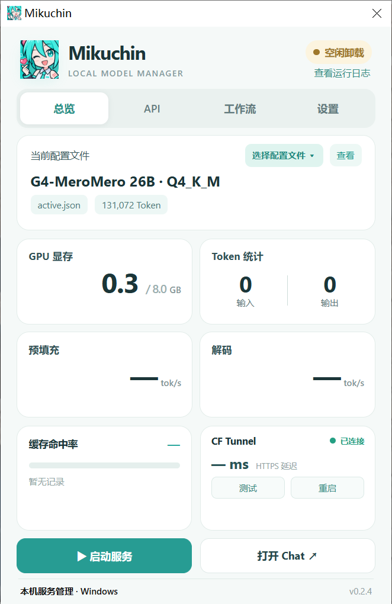
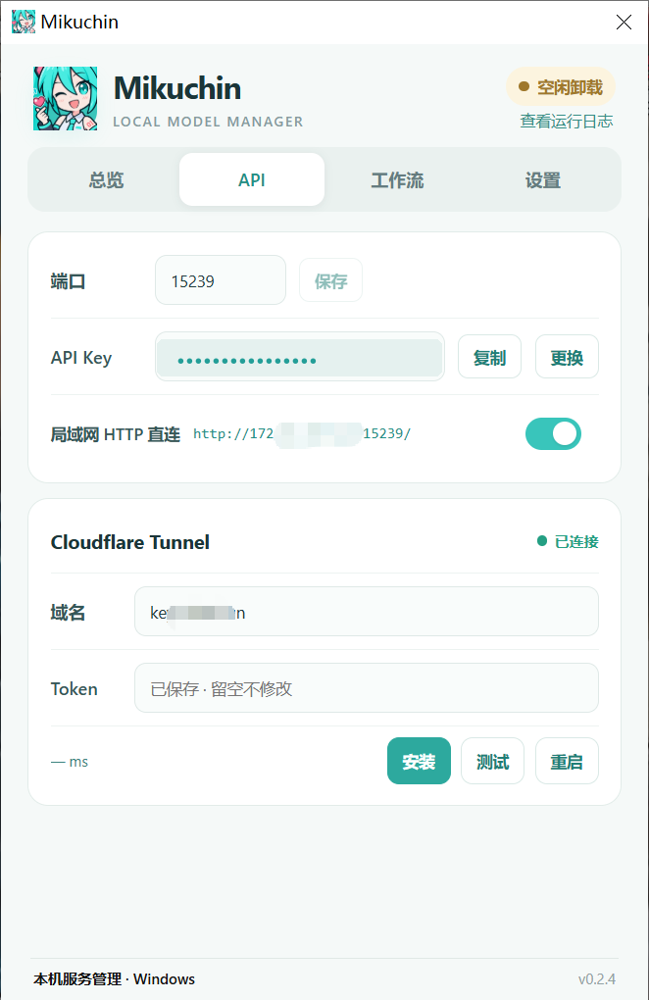
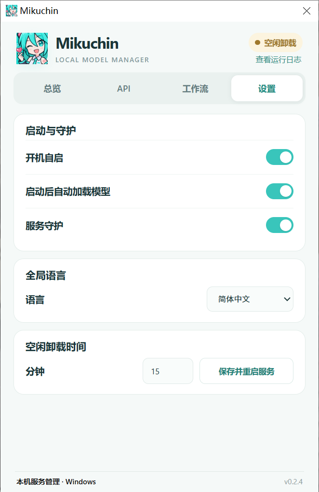

完全本地推理
PolyStrata 引擎驱动，模型权重、会话库、KV 快照与生成图片都留在你自己的电脑上。
Miku亲 · v0.2.5 · Windows / Android
Mikuchin（Miku亲）是一个本地多模态 AI 伴侣与图像创作工作台。聊天、作画、角色扮演， 都由你自己的 GPU 完成——模型、对话、角色卡和作品，始终由你自己的设备保管。
聊天、图像、角色——同一套 Web 界面，桌面和手机都能打开。



基于 Tauri 2 + Rust 的原生 Windows 管理器。点一下托盘图标唤出，关闭即回到托盘，不占任务栏。



底层是独立维护的 PolyStrata 推理引擎，上层是为“陪伴”而打磨的每一个细节。
PolyStrata 引擎驱动，模型权重、会话库、KV 快照与生成图片都留在你自己的电脑上。
切换模型或空闲卸载时自动保存上下文缓存，回来接着聊，不用重新“读”一遍历史。
对话内置生图工具，可参考角色立绘生成专属插画；也能接入外部 MCP 工具服务。
兼容 SillyTavern chara_card_v2 导入导出；用户身份可不用、继承全局或按角色独立。
显存、内存、Prefill / Decode 速度、Token 统计与 KV 命中率，推理状态一目了然。
三语界面实时切换，Web、Windows 管理器与托盘菜单同步更新，绝不改动你的聊天内容。
内置用户态 Tailscale，不占系统 VPN 槽位，出门也能连回家里的 Mikuchin。
API Key 在 Windows 用 DPAPI、在 Android 用 Keystore 加密；集成 Cloudflare Tunnel 监控。
推理只发生在你的电脑上；手机通过 Tailscale 或 Cloudflare Tunnel 连回来，API Key 全程把关。